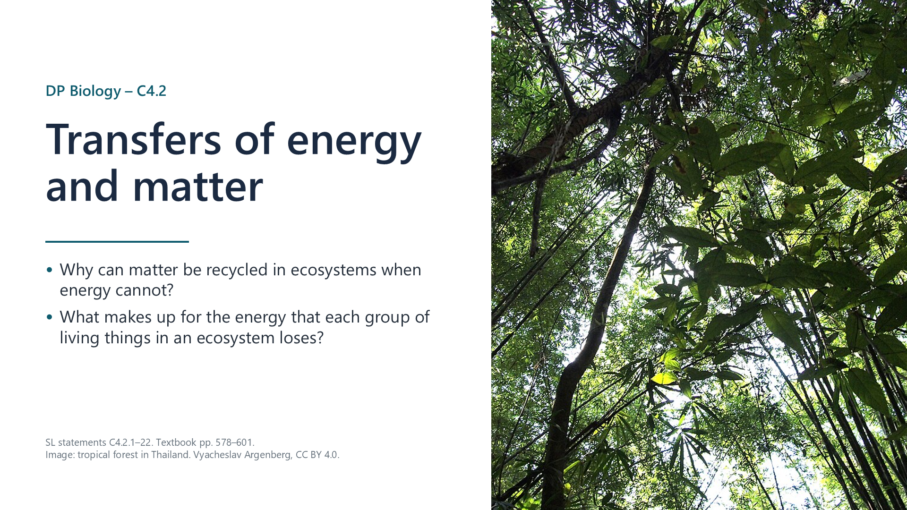
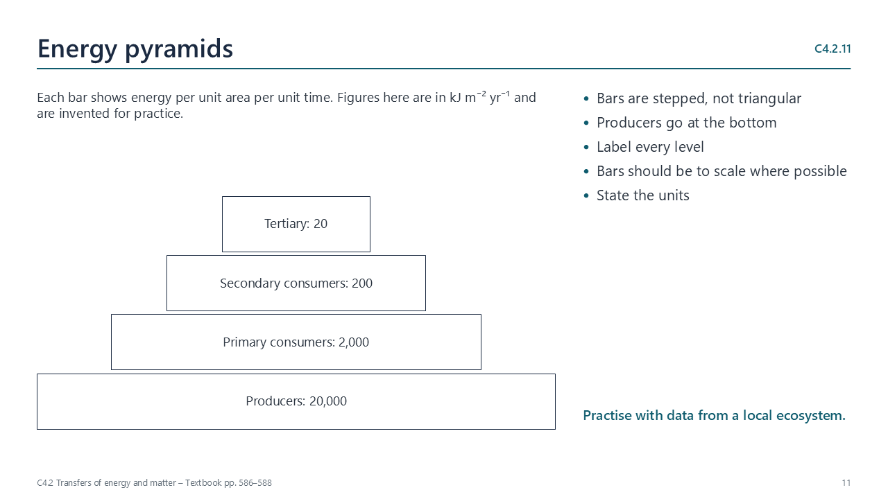
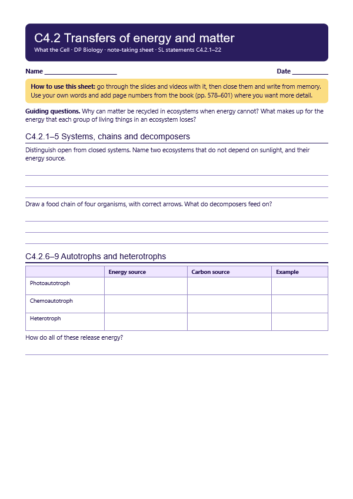
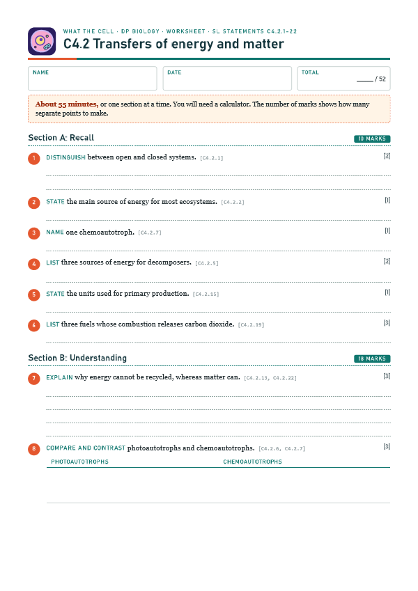
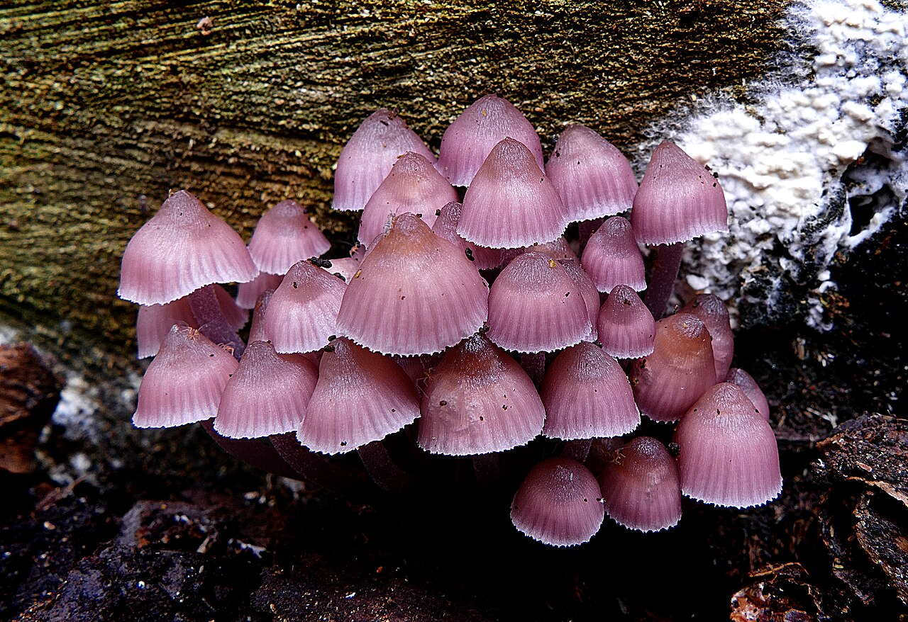
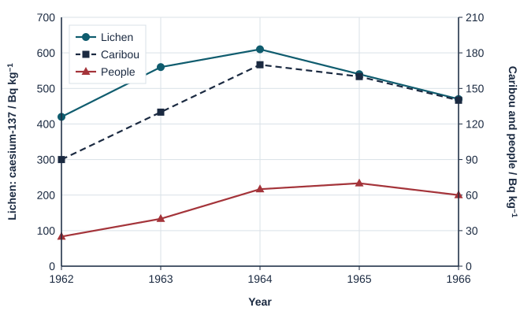

Ecosystems are open systems
p. 579Energy and matter can both enter and leave an ecosystem. In a closed system, only energy can do so.

Written for this site from the class slides, with textbook page references for each statement. The chapter is on pages 578–601 of the course textbook. Image credits are on slide 25.
Energy and matter can both enter and leave an ecosystem. In a closed system, only energy can do so.
Exceptions include caves, and ocean depths below the reach of light. There, organic matter brought in, or chemical energy used by bacteria, supplies the energy.
Chemical energy passes to a consumer as it feeds on the previous organism in the chain.
Chains and webs show feeding relationships. Arrows show the direction of transfer of energy and biomass.
Decomposers receive energy as carbon compounds in faeces, dead parts of organisms and dead whole organisms.
Autotrophs use an external energy source to make carbon compounds from simple inorganic molecules. Energy is needed for carbon fixation, and for reactions that build macromolecules.
Photoautotrophs use light. Chemoautotrophs use oxidation reactions, which release energy. Iron-oxidizing bacteria are an example.
Heterotrophs digest carbon compounds from other organisms, internally or externally, and assimilate the products to build the compounds they need.
Autotrophs and heterotrophs both release energy by oxidizing carbon compounds in cell respiration.
Levels are producer, primary consumer, secondary consumer and tertiary consumer. Many organisms have a varied diet, so they can feed at more than one level.

Pyramids are stepped and show energy per unit area per unit time, such as kJ m−2 yr−1. Producers are at the bottom.
Some organisms or parts are not eaten, some food is not digested, and carbon compounds are oxidized in respiration. Decomposers and detritus feeders are not usually placed in food chains, though they do transform energy.
Energy transfers are not 100% efficient. Heat is produced when ATP is made in respiration, and when ATP is used in cells. This heat passes to the environment, and organisms cannot reuse it.
At each stage there are fewer or smaller organisms, so there is less biomass. Energy per unit mass is not reduced. Too little total energy remains to support many levels.
This is the build-up of carbon compounds in autotrophs, measured in g m−2 yr−1. Biomes vary in how much they accumulate.
This is the build-up of carbon compounds in heterotrophs. It is lower than primary production, because biomass is lost as carbon dioxide and water in respiration.
Show how carbon is recycled by photosynthesis, feeding and respiration.
If photosynthesis exceeds respiration, an ecosystem has a net uptake and acts as a sink. If respiration exceeds photosynthesis, it has a net release and acts as a source.
Burning biomass, peat, coal, oil and natural gas releases carbon dioxide. These stores formed at different times. Lightning can start fires, but human activity greatly raises the amount of combustion.
Carbon dioxide at Mauna Loa has been measured since 1958. The long-term rise reflects combustion. The yearly rhythm reflects photosynthesis, which is greater in the northern summer, and respiration, which exceeds it in winter.
Aerobic respiration uses oxygen from photosynthesis. Photosynthesis uses carbon dioxide from respiration. The amounts each year are huge.
All elements that organisms use are recycled, not just carbon, and decomposers play a key role.
Select a video to play it here. Select it again to close it.
Print this guide and complete it as you work through the slides and videos. It asks for your own explanations, so close the notes while you try each section.

The self-check needs JavaScript to run.
A printable worksheet covering all twenty-two statements, from quick recall to data questions and a longer answer. It has 52 marks and takes about 55 minutes, or you can do one section at a time.
Your teacher has the mark scheme.

Questions built on realistic experimental data, in the style of Paper 1B and Paper 2. Work them on paper and show your working. 8 marks in total. Your teacher has the mark scheme.

The mean residence time (MRT) is the average time a nutrient stays in dead organic matter, such as leaf litter, before decomposers release it back to the soil for plants. The table shows MRTs in four biomes.
| MRT / years | Boreal forest | Temperate forest | Chaparral (scrub) | Tropical rainforest |
|---|---|---|---|---|
| Nitrogen | 230 | 5.5 | 3.8 | 0.4 |
| Phosphorus | 320 | 5.8 | 3.6 | 0.6 |
| Potassium | 94 | 1.3 | 1.4 | 0.2 |
Radioactive caesium-137 from weapons tests settled on Arctic land in the early 1960s. It was measured in lichen, in caribou (which eat lichen) and in people who eat caribou.

You will need: Monthly atmospheric carbon dioxide data from NOAA, spreadsheet
Safety: No practical hazards.
Carry this out with your teacher's supervision and follow your school's lab rules.
Charles Keeling began measuring carbon dioxide at Mauna Loa in 1958. His careful, continuous record became a key piece of climate evidence.
Nobody could know in advance how much the record would matter. Consider how knowledge depends on funding work with no immediate payoff.
Summarised in our own words. Use each code to find the exact wording in your textbook or the IB subject guide.
C4.2 has no HL-only content. SL and HL students learn the same material here.
© 2026 Akash Parthi Bendran. Please ask before using or sharing any resources from this site: see permission to use.